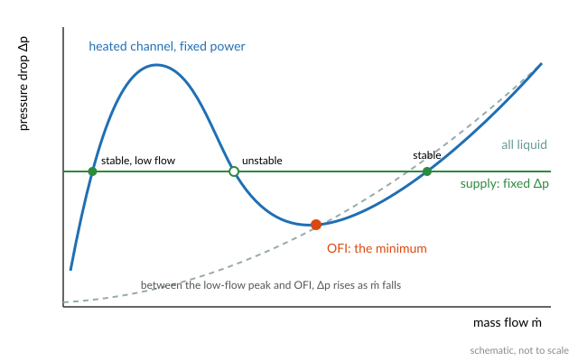
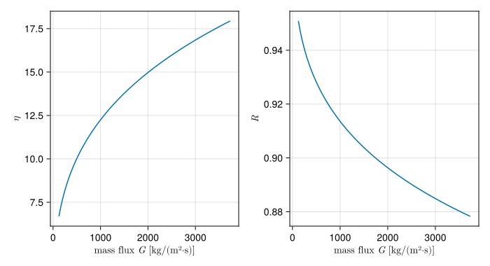

Onset of flow instability
The onset of flow instability (OFI) is the point at which a heated channel's pressure drop stops falling as its flow falls and starts rising instead. For a channel that shares its pressure difference with many others, as every channel in a core does, that point is the edge of a flow excursion: the flow can drop suddenly to a fraction of its value, and the channel reaches critical heat flux at a power it could otherwise carry easily. In low-pressure cores with narrow channels it is often the limit reached first at forced flow. The Thermal-hydraulic limits overview explains why.
The demand curve
Hold the power of a channel fixed and vary its flow. With no boiling, the pressure drop falls with the flow, roughly as $\dot m^2$ in turbulent flow. Once the flow is low enough for boiling to start, two things change. The vapour takes up far more volume than the liquid it came from, so the flow accelerates and its friction rises. And the lower the flow, the more of the channel is boiling. Below some flow the second effect wins, and the pressure drop rises as the flow falls. The curve of pressure drop against flow at fixed power, the channel's demand curve, then has an S shape:

A channel operates where its demand curve meets the curve of what drives it, its supply curve. That point is stable if a small drop in flow raises the driving pressure more than it raises the demand, the criterion of Ledinegg (Ledinegg, 1938):
\[\frac{\partial\,\Delta p_\text{demand}}{\partial \dot m} > \frac{\partial\,\Delta p_\text{supply}}{\partial \dot m}.\]
A channel among many in parallel sees an almost fixed pressure difference between the plenums above and below the core, so its supply curve is flat. Every point on the falling branch of the demand curve is then unstable, and the minimum of the curve is where instability starts. OFI is that minimum.
The Whittle-Forgan correlation
Whittle and Forgan (Whittle and Forgan, 1967) measured demand curves for subcooled water in narrow, uniformly heated channels at low pressure, the conditions of plate-fuel research reactors. They found that the minimum occurs when the outlet bulk temperature has covered a fixed fraction of the way from the inlet to saturation,
\[R = \frac{T_\text{out} - T_\text{in}}{T_\text{sat} - T_\text{in}} = \frac{1}{1 + \eta\, D_h / L_h},\]
where $L_h$ is the heated length and $\eta$ an empirical constant, around 25 for their channels. The form says that OFI comes with the outlet still subcooled, and the more so the shorter and wider the channel: subcooled boiling at the wall makes enough void to bend the demand curve before the bulk boils.
Fabrèga (Fabrèga, 1971) made $\eta$ depend on the mass flux,
\[\eta = 3.15\,(1.08\,G)^{0.29},\]
with $G$ evaluated at the inlet in g/(cm²·s), the units of the original (Python STREAM quotes it: "vitesse massique à l'entrée et évaluée en CGS"). This is the form STREAM uses. Multiplying the energy needed to bring the coolant to saturation by $R$ gives the channel power at OFI:
\[Q_\text{OFI} = \frac{|\dot m|\int_{T_\text{in}}^{T_\text{sat}} c_p\,dT}{1 + \eta\,D_h/L_h}.\]
using STREAM, STREAM.Thresholds, CairoMakie
CairoMakie.activate!(type="svg")
pipe = PipeGeometry_rectangular(0.6, 0.067, 0.0024, 0.067)
ṁ = range(0.02, 0.6; length=100)
G_cgs = ṁ ./ pipe.A ./ 10 # kg/(m²·s) to g/(cm²·s)
η = 3.15 .* (1.08 .* G_cgs) .^ 0.29
R = 1 ./ (1 .+ η .* pipe.Dh ./ pipe.L)
fig = Figure(size=(700, 380))
ax1 = Axis(fig[1, 1]; xlabel=L"mass flux $G$ [kg/(m²·s)]", ylabel=L"\eta")
ax2 = Axis(fig[1, 2]; xlabel=L"mass flux $G$ [kg/(m²·s)]", ylabel=L"R")
lines!(ax1, G_cgs .* 10, η)
lines!(ax2, G_cgs .* 10, R)
fig
For this 0.6 m channel $R$ stays between about 0.88 and 0.95: OFI comes when the outlet bulk has covered 88 to 95 % of the way to saturation.
Implications of the model
- It is a channel-level limit. The correlation gives one power for the whole channel, through the outlet temperature, and says nothing about the axial power shape. It was fitted to uniformly heated channels. With a peaked shape the void starts earlier in the channel, which the correlation does not see.
- It uses the heated length. STREAM takes $L_h$ as the channel's full length
pipe.L. A channel whose heated length is shorter than its hydraulic length should be given a geometry for the heated part. - The saturation temperature is at the outlet. On a
ChannelState,q_OFI_whittle_forganreads $T_\text{sat}$ from the downstream cell, the last in forward flow and the first in reversed flow, since the outlet is where the coolant is closest to boiling. - It needs forced flow. The derivation assumes a channel fed through a flat supply curve by forced flow. At very low or natural-circulation flow, CHF can come first, and the OFI power loses its meaning as the flow tends to zero.
The margin is a power ratio, $Q_\text{OFI} / Q_\text{channel}$: how far the channel's power could rise, at its present flow and inlet temperature, before OFI. See Margins.
References
- Fabrèga, S. (1971). Le calcul thermique des réacteurs de recherche refroidis à l'eau. Technical Report CEA-R-4114 (Commissariat à l'Énergie Atomique).
- Ledinegg, M. (1938). Instabilität der Strömung bei natürlichem und Zwangumlauf. Die Wärme 61, 891–898.
- Whittle, R. H. and Forgan, R. (1967). A correlation for the minima in the pressure drop versus flow-rate curves for sub-cooled water flowing in narrow heated channels. Nuclear Engineering and Design 6, 89–99.